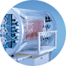
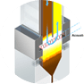
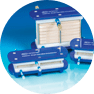
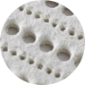
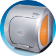

Continuously Improving Bioprocesses
Featured Products

BioSMB® Continuous Chromatography
Unique to biopharmaceuticals, Pall's BioSMB system reduces costs of multiproduct biomanufacturing and improves the utilization of chromatography sorbents. The first disposable flow-path, continuous multi-column chromatography solution, the BioSMB system is designed to boost your productivity and optimize your use of chromatography sorbents.
BioSMB Continuous Chromatography: scaleable, flexible, single-use path to multi-column applications.
- Ideal for bind and elute chromatography
- Reduces buffer tank requirements, even in complex product expression systems
- Integrated, low-complexity single-use valve array services up to 16 columns/devices
- Excellent productivity per manufacturing space unit area
Read More

Acoustic Wave Separator
Acoustic Wave Separation (AWS) maximizes efficiency of continuous cell removal in a closed system without centrifugation.Complementing Pall's industry-leading Stax™ depthfiltration products, AWS enables continuous clarification of cell culture and bioreactor integration with downstream processing, streamlining the biologics manufacturing process within a small operating footprint.
Acoustic Wave Separation: a step-change in biologics processes. When a cell culture passes through a flow channel, cells are trapped at the nodes of the acoustic waves and then aggregate. This results in their precipitation from suspension as buoyancy decreases.
- Disruptive technology for cell culture clarification in fed-batch & perfusion applications
- Applies acoustic forces across flow channel to generate 3D standing wave
- No temperature increase or damage to cells & proteins
- Robust process operation at high yields
Read More

Cadence™ Inline Concentrator
Pall's Cadence Inline Concentrator delivers single-pass Tangential Flow Filtration (TFF) technology for continuous processing. The professional choice for biotech downstream processing, TFF is fast becoming today's standard for biomolecules concentration.
Pall's Cadence Inline Concentrator: your best solution for in-process volume reduction.
- High-productivity TFF process with direct flow filtration (DFF) simplicity
- In-process volume reduction 2x-4x and higher
- Reduced residence time minimizes product shear
- Pre-assembled, holderless, plug-&-play module for class-leading process integration
Read More

Hyperion Cell Removal and Product Recovery Systems
Developed by Pall for up to 2000 L mammalian cell broth harvesting, single-use Stax depth filter capsules with new Hyperion flow technology maximize the efficiency of cell removal. Hyperion flow technology minimizes your quantity of depth filter capsules, with no centrifugation step necessary.
Pall's Stax Depth Filter capsules with Hyperion flow technology: for superior filter capacity and operating efficiency.
- Stax large single-use capsules for process scale
- 1 in., 5 in. and 10 in. Kleenpak™ Nova capsules for process development
- Reduced filter area; lower manufacturing costs
- No centrifugation step means lower capital investment, reduced maintenance and smalller footprint
- Fully-disposable capsule format
- No need to add flocculation media or diatomaceous earth (DE)
- No pH reduction steps
- Process simplification & fast process development
Read More
Palltronic® Flowstar LGR Test Instrument
The Palltronic Flowstar LGR test instrument delivers point-of-use leak testing and filter integrity testing in single-use systems up to 200 L. The Palltronic Flowstar LGR instrument is ideal for formulation/filling applications in vaccine, biotech or pharmaceutical processes where sterility of single-use systems is critical.
Palltronic Flowstar LGR Test Instrument: fast point-of-use testing of single-use systems.
- Tests most configurations of single-use systems & filters with single instrument
- Rapid systems leak testing within 15 minutes
- Pre- and post-use filter integrity testing flexibility
- Use in environments subject to CFR21 part 11 guidelines
Read More

Octet® K2 System
Pall's multi-purpose Octet K2 system relieves low-volume users of the need to choose between cost and performance in a label-free assay system. The 2-channel detection system provides realtime quantitative analysis for measuring active protein concentration, even in complex cell-culture supernatants and lysate mixtures.
The Octet K2 System provides easy access to biomolecular interactions data
- Characterize protein-protein & protein-small molecule binding interactions for early discovery
- Sensitivity for measuring small molecule binding kinetics
- Unique 2-channel design with dedicated spectrometers for simultaneous referencing or added capacity
- Simple software setup
- Easy, template-driven interface
Read More